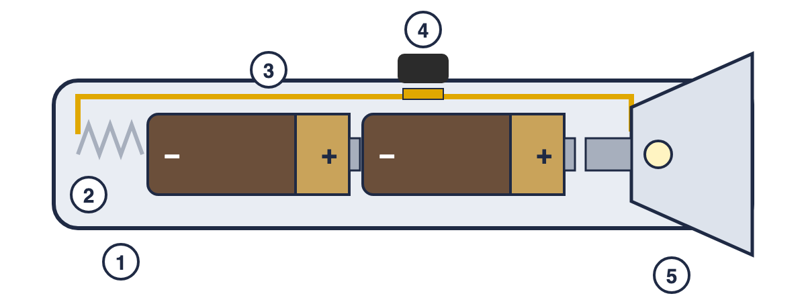

Wo sind wir? A Ladung und Stromkreis · B Stromstärke und Spannung · C Schaltungen · D Widerstand · E Energie und Kosten · F Wirkungen und Gefahren
✎ allein · auf dieser Seite (ca. 12 min)
Lies das Material und löse die Aufgaben. Bei d) und e) hilft dir der Hilfe-Link. Danach vergleichst du mit der Kontrolle.
Material  So ist eine einfache Taschenlampe gebaut: 1 Gehäuse aus Kunststoff · 2 Feder · 3 Metallstreifen · 4 Schalterknopf aus Kunststoff · 5 Lämpchen im Reflektor. Die beiden Batterien liegen hintereinander. |
◆ a) Fahre in der Zeichnung mit dem Stift den Weg nach, den der Strom nimmt, wenn die Lampe leuchtet. ★
Zeichne direkt ins Bild.
◆ b) Leiter oder Isolator? Kreuze an. ★
| Teil | Leiter | Isolator |
| 1 Gehäuse | ☐ | ☐ |
| 2 Feder | ☐ | ☐ |
| 3 Metallstreifen | ☐ | ☐ |
| 4 Schalterknopf | ☐ | ☐ |
◆ c) Was macht der Schalter mit dem Stromkreis? Kreuze an und ergänze den Satz. ★★
☐ Er öffnet und schließt den Stromkreis.
☐ Er speichert Strom.
☐ Er macht den Strom stärker.
Steht der Schalter auf AUS, ist der Stromkreis ____________________, deshalb …
________________________________________________
________________________________________________
________________________________________________
d) Hat Ben recht? Kreuze an und begründe. ★★ ☐ Ben hat recht ☐ Ben hat nicht recht Hilfe: Checkliste und Satzanfänge → ________________________________ ________________________________ ________________________________ ________________________________ ________________________________
|
e) Die Taschenlampe leuchtet nicht, obwohl die Batterien neu sind. Nenne zwei mögliche Gründe und begründe jeweils mit dem Stromkreis. ★★★
Hilfe: Checkliste und Satzanfänge →
________________________________________________
________________________________________________
________________________________________________
________________________________________________
________________________________________________
Löse zuerst alles hier auf der Seite. Dann öffne die Kontrolle und gib deine Antworten ein. Am Ende: Screenshot der Übersicht hier einfügen. Falsches verbesserst du in Grün.
Screenshot: Übersicht Kontrolle |